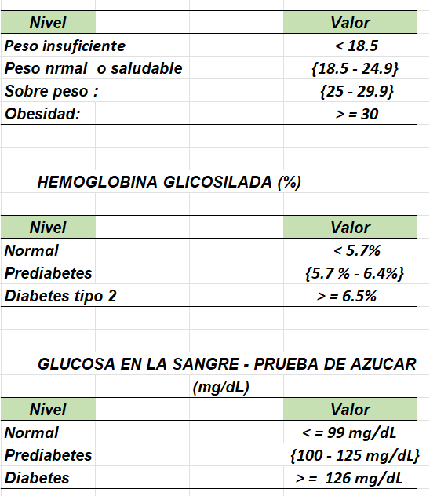
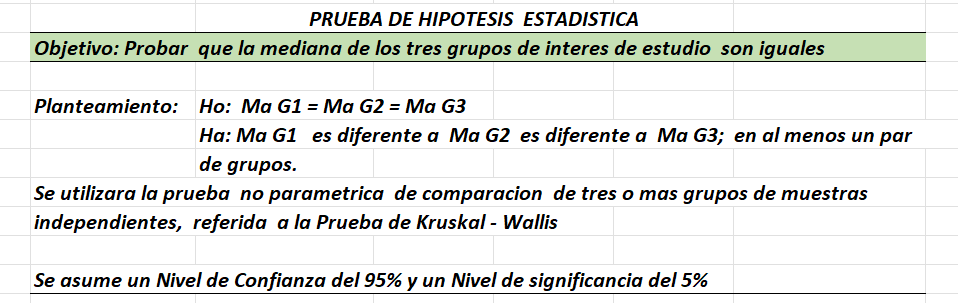

El presente informe, tiene como objetivo analizar las variables que intervienen en la enfermedad de diabetes para un sector de la población de interés, categorizada como adulto joven, dado a su creciente cifras que se registran en esta enfermedad, para ello se ha utilizado una muestra de 100,000 observaciones, tomado de la data set del curso, a fin que nos permita tomar acciones preventivas mediante evidencias del análisis de datos.
Según el articulo Factores modificables y riesgo de diabetes tipo2, en adulto jóvenes – un estudio transversal, la distribución de la población la categoriza en: < 45; {45-54}; {55-64}; > 64 años (Bohórquez at al.,2020), la OMS considera a adultos jóvenes {18-44}; adultos medio {45-59}; adulto mayor {60-74}; ancianos {75-90}
En este caso, nuestro interés se centra en tres subgrupos: Adulto jóvenes {25-44}; Adulto medio {45-59}; Adulto mayor {60 a mas }, descartando a los menores de 24 años.
En este contexto se reordena la base de datos, donde la variable dependiente del tipo categórica, dicotómica Y: Predicción de diabetes y un conjunto de ocho (8) variables independientes o predictores (Vi): (V1, V2,……….V8 ), de los cuales cuatro (4) son de tipo numérico continuo y cuatro (4) del tipo categórico.
La diabetes es una “enfermedad crónica que se produce cuando el páncreas no produce suficiente insulina o cuando el cuerpo no puede utilizar de forma eficaz la insulina que produce”. La insulina es una hormona que regula la azúcar en sangre (OPS/OMS); caracterizado por los altos niveles de azúcar en la sangre, que con el tiempo se traduce en daños graves en el corazón, los vasos sanguíneos, los riñones, los ojos y el sistema nervioso, factores que pueden causar discapacidad y muerte prematura.
De acuerdo con la literatura, se presenan tres tipos de diabetes a) diabetes tipo I, esta referido a la deficiente produccion de la insulina y se de en la poblacion juvenil, b) diabetes tipo II, referido a que el organismo no usa la insulina eficazmente y se da en la población adulta, c) diabetes gestacional, esta referido al transtorno transitorio que se produce durante el embarazo según el Informe Mundial sobre la Diabetes de la OMS(2016)
Se presenta la tabla de valores referenciales tabla 2

¿Existe diferencia significativa de los grupos de población de Adultos jóvenes, Adulto medio y Adulto mayor y la enfermedad de diabetes, en Lima Metropolitana, 2024
Determinar la diferencia significativa entre los grupos que presentan la enfermedad de diabetes, en Lima Metropolitana, 2024.
Existe diferencia significativa entre los grupos que presentan la enfermedad de diabetes, en Lima Metropolitana, 2024.
Se formula la prueba estadistica en la tabla 2
